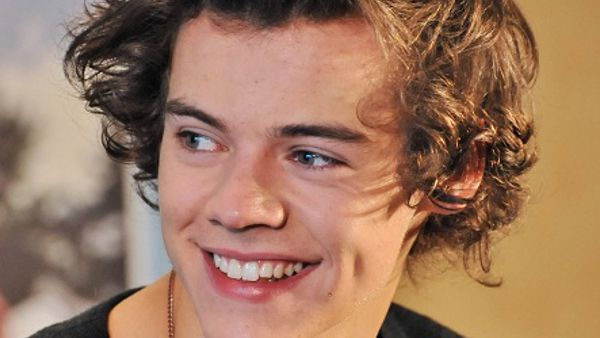

Biografía de Harry Styles
"You’re wonder under summer sky"
1994-2010: primeros años y audición en The X Factor
Harry Styles nació el 1 de febrero de 1994
en el pueblo de Holmes Chapel, ubicado en Cheshire, Reino Unido, bajo el nombre de Harry Edward Styles.
Es hijo de Des Styles y Anne Cox, y hermano menor de Gemma Styles. Estudió en la Holmes Chapel Comprehensive School,
donde formó su propia banda llamada White Eskimo junto a sus amigos Haydn Morris, Nick Clough y Will Sweeney.
En 2009, participaron en la «Batalla de Bandas» y resultaron ganadores. También trabajó en una panadería durante un tiempo.
En 2010, Harry audicionó para The X Factor con la canción «Isn't She Lovely» de Stevie Wonder y resultó elegido.
2010-2015: One Direction y bases de carrera como solista
Tras audicionar para The X Factor, la jueza Nicole Scherzinger sugirió que Harry formase parte de un grupo llamado One Direction junto con Liam Payne, Zayn Malik, Niall Horan y Louis Tomlinson. La creación del grupo se hizo realidad y los cinco fueron apadrinados por Simon Cowell.
Durante la competencia, la banda interpretó distintos temas como «My Life Would Suck Without You» de Kelly Clarkson y «Total Eclipse of the Heart» de Bonnie Tyler, lo que los convirtió en uno de los favoritos para ganar el concurso. Sin embargo, quedaron en el tercer lugar, detrás de Rebecca Ferguson y el ganador Matt Cardle. A pesar de no haber ganado, Cowell pagó un contrato de dos millones de libras para que One Direction firmara con el sello discográfico Syco.
En 2011, lanzaron su primer álbum de estudio, Up All Night. Este debutó en el número uno del Billboard 200, lo que convirtió a One Direction en el primer grupo británico que hace debutar su primer álbum de estudio en el número uno.
En noviembre de 2012, lanzaron su segundo álbum, Take Me Home.Este contó con una recepción mejor a la de Up All Night, ya que llegó al número uno en el Reino Unido, siendo el primer disco del quinteto que lo logra.
Por otra parte, juntos iniciaron su segunda gira Take Me Home Tour, que recorrió cuatro continentes de todo el mundo y además parte de ella fue grabada para su primera película documental dirigida por Morgan Spurlock, llamado This is Us.
El tercer álbum de estudio de la banda Midnight Memories se lanzó el 25 de noviembre de 2013. Fue el álbum más vendido en todo el mundo en 2013 con 4 millones de copias vendidas en todo el mundo.
En noviembre de 2014, One Direction lanzó su cuarto álbum Four que incluiría los sencillos «Steal My Girl» y «Night Changes», ambas canciones alcanzaron la certificación de platino en Estados Unidos.
En febrero de 2015, la banda se embarcó en la gira On The Road Again.
En noviembre de 2015, se lanzó su quinto álbum Made in the AM, liderado por los sencillos «Drag Me Down» y «Perfect». Tras el lanzamiento del álbum, el grupo pasó a una pausa indefinida.

2016-presente: Harry Styles y Fine Line
En febrero de 2016, Styles abandonó Modest Management, la empresa que representaba One Direction. En mayo del mismo año, lanzó su propio sello discográfico Erskine Records y firmó un contrato con la discográfica Columbia Records
En marzo de 2017, anunció que su primer sencillo en solitario «Sign of the Times» se lanzaría el 7 de abril. La canción alcanzó el número uno en la lista de sencillos del Reino Unido y el número cuatro en el Billboard Hot 100.
Su álbum debut homónimo se lanzó el 12 de mayo de 2017.Debutó en el número uno en varios países, incluidos el Reino Unido, Estados Unidos y Australia.
La película, Harry Styles: Behind the Album, que documentó el proceso de composición y grabación del álbum, se lanzó en mayo del mismo año.
Se embarcó en su primera gira de conciertos Harry Styles: Live on Tour, desde septiembre de 2017 hasta julio de 2018, actuando en América del Norte y del Sur, Europa, Asia y Australia.
Realizó su debut cinematográfico en la película de guerra Dunkerque (2017), dirigida por Christopher Nolan, interpretando a un soldado británico llamado Alex.
El 11 de octubre de 2019, reveló la portada y el título de la canción «Lights Up», la cual estrenó ese mismo día junto a su vídeo musical como el primer sencillo de su segundo álbum de estudio
El 4 de noviembre de 2019, anunció el nombre y lanzamiento de su segundo álbum Fine Line, junto a su portada oficial.[
El álbum debutó en la primera posición de las principales listas de los más vendidos en el Reino Unido y los Estados Unidos, con récords en ventas.
Harry's House es el tercer álbum de estudio del cantante y compositor inglés Harry Styles , lanzado el 20 de mayo de 2022 por Erskine y Columbia Records
El álbum debutó con las mejores ventas en su primera semana en la carrera de Styles. Debutó en el número uno de la lista de álbumes del Reino Unido con 113.000 unidades equivalentes a álbumes , convirtiéndose en el álbum más vendido y el más vendido de 2022 en el país.
En 2022 protagonizó dos largometrajes: Don't Worry Darling, junto a Florence Pugh, que se estrenó en cines en septiembre de ese año, y My Policeman, que se estrenó en Amazon Prime Video en noviembre.